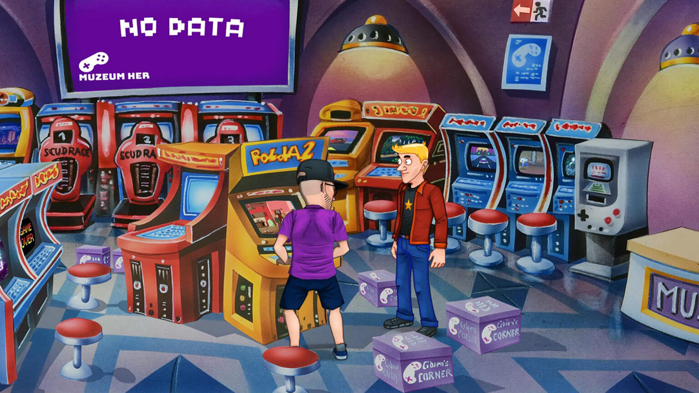

Na začátku letošního února dorazil Polda 7 na
Android a tento týden i na iOS, jak bylo slíbeno. Rok po vydání hry na PC si tak mohou Pankrácův
sedmý případ užít i ti, kteří preferují hraní na cestách nebo zkrátka mimo velkou obrazovku. I
zde je stejně jako u ostatních mobilních dílů úvodní část dostupná zdarma na zkoušku s možností
dokoupit zbytek hry, což je fajn přístup a možnost vyzkoušet si, zda vám styl sedmého dílu sedí.
A pokud patříte mezi podporovatele z kampaně na Hithitu, hru si můžete na mobilních zařízeních
aktivovat pomocí klíče, který byl určen původně na Steam. Zároveň se tím na mobilních zařízeních
nachází všechny vydané díly, tedy pokud se bavíme o dostupnosti na Google Play, protože na
konkurenčním App Store není kvůli cenzuře dostupný druhý díl. Na Steamu se prozatím nachází
sedmý a šestý díl a z těch starších je k dispozici Polda 3, který dorazil v prosinci. Jaký díl
jej bude následovat, to vývojáři zatím ještě nerozhodli.
Ale když už padla zmínka o Poldovi 2, nadále samozřejmě probíhá vývoj jeho „remástru“, který
loni rovněž uspěl na Hithitu a nakonec si na sebe vydělal přes 1,8 milionu korun. A právě o tom,
jak práce postupují, se vývojáři rozpovídali ve videu, ve kterém odpovídali na dotazy a nahlédli
prostřednictvím toho i do vzdálenější budoucnosti. Na konci března vývojáři vyzvali fanoušky,
aby se zeptali na to, co je zajímá. Nejen o remástru, ale klidně i o sérii celkově. V téměř
dvacetiminutovém videu tak vedoucí vývoje Petr Svoboda a grafik Jakub Mareš pohovořili o celé
řadě témat, jelikož po Poldovi 2 přišla řeč také na možné další platformy, ale rovněž na
pokračování Pankrácova příběhu v podobě Poldy 8, další plány a nostalgický pohled do minulosti.
Začněme ale hezky od začátku – jak je tedy na tom dle vývojářů momentálně remástr? Petr Svoboda
i Jakub Mareš potvrdili, že vývoj probíhá podle plánů, a proto by měli stihnout avizované vydání
kolem letošních Vánoc. Mareš pak neváhal podotknout, že si jako grafik dává s překreslováním
grafiky obzvlášť záležet. Přesněji řečeno nejde jen o překreslení jedna ku jedné, nýbrž i o
doplňování detailů a také úpravu animací, která zabere notný čas. Znovu připomněli, že v
základní hře zůstává vše při starém a nijak nezasahovali do nám známého příběhu, pouze na něj na
jeho konci navazují, aby jej překlenuli k dílu třetímu a nové Pankrácově profesní dráze coby
soukromého detektiva. Totéž platí i o hudbě, jejíž melodie zůstávají stejné, pouze jim bude
dopřán lepší zvukový mix. Kdo by ovšem mermomocí ze zvyku trval na původní hudbě, bude mít
možnost si ji ve hře zvolit.
Ačkoli dokončení remástru zabere ještě pár měsíců, už se množí dotazy týkající se dalších dílů a
vývojáři se netají tím, že o nich také přemýšlí. Často se skloňuje první díl, ale zde by to bylo
složitější s autorskými právy, která by musel Petr Svoboda vyjednat s původními vývojáři, tedy
SleepTeamem, ale i Jakub Mareš se příliš necítí na předělávání natolik specifické grafiky. Ale
zatím nic nebylo rozhodnuto. Ve hře je stále i přepracování starších dílů na konzole, přičemž
nejpravděpodobnějším stále zůstává Nintendo Switch díky dotykovému displeji. Přednost ale zatím
má doručení zbývajících dílů na Steam.
Několik otázek se týkalo i historie série, která je vzhledem ke svému počátku v roce 1998 a
sedmi hrám skutečně úchvatná a mezi českými hrami nezpochybnitelně významná. Petr Svoboda
vzpomněl na SleepTeam a jejich první díl, a poté jak se k vývoji dostal se druhým dílem on, Dan
Falta a Karel Matějka. Dan Falta se poté na Poldovi podílel až do Poldy 4 z roku 2002, ale jinak
se od té doby dodnes udržel už jen sám Svoboda, jelikož s návratem série v podobě Poldy 6 v roce
2014 přišel i zcela nový tým. Z někdejších vývojářů zavzpomínali vedle Matějky i na skladatele
Romana Džupinku, který skládal hudbu pro druhý až pátý díl, ale také si posteskli nad tím, že se
jim pro poslední sedmý díl již nepodařilo angažovat Jiřího Lábuse, který do té doby daboval
kromě pátého dílu v každé hře.
Kromě remásteru, vydávání starších dílů na Steamu a možnému portování na konzole… Co může po
dlouhých pětadvaceti letech Pankráce ještě překvapit? Čeká ho ještě další případ? Je to dost
možné, ale byl by to patrně ten úplně poslední. Vývojáři si jsou vědomi toho, že postava
Pankráce stojí na dabingu Luďka Soboty, který už však, se vší úctou, má svůj věk. Přes veškerou
snahu se to projevovalo už i v Poldovi 7 a další díl s Pankrácem v hlavní roli už by byl zkrátka
moc náročný. Polda 8 však může vzniknout a už nyní se dokonce vývojáři fanoušků ptají, zda by
stáli právě o něj, nebo raději o jiný projekt. Pankrác by už ovšem nebyl tím hlavním hrdinou a
součástí příběhu by bylo pomyslné předání pochodně a počátek něčeho nového v rámci série.
Petr Svoboda se nicméně znovu rozpovídal i o svém vysněném projektu, kterým se ostatně příliš
netají. Tím je trochu jiná hra, temná adventura, která by se v rámci poldovské série dala
přirovnat ke čtvrtému dílu. On sám je v tuto chvíli o trochu více pro Poldu 8, aby mohli uzavřít
Pankrácův příběh, s čímž souhlasí i řada fanoušků. I nadále však platí, že by si většina z nich
zároveň přála i onu temnou adventuru. Plánů v Zima Software rozhodně nemají málo. Budoucnost je
otevřená, a tak nezbývá než čekat, co dalšího vývojáři po očekávaném Polda 2 remásteru hráčům a
fanouškům nadělí.
